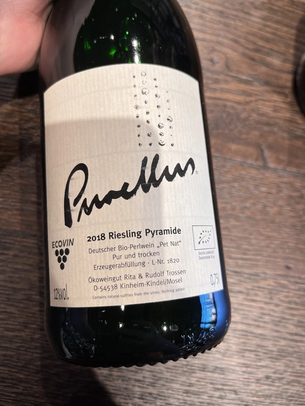
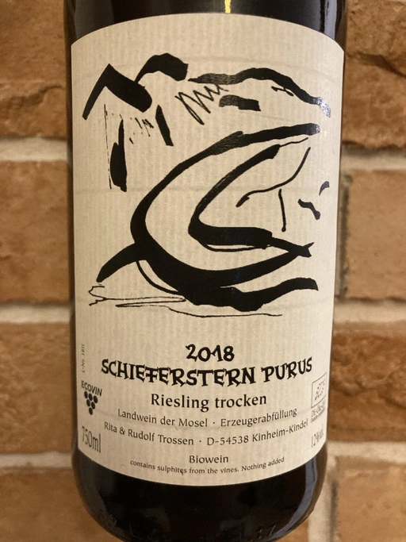
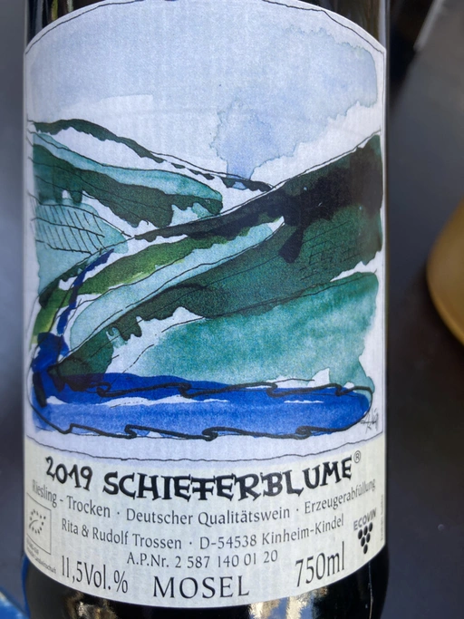
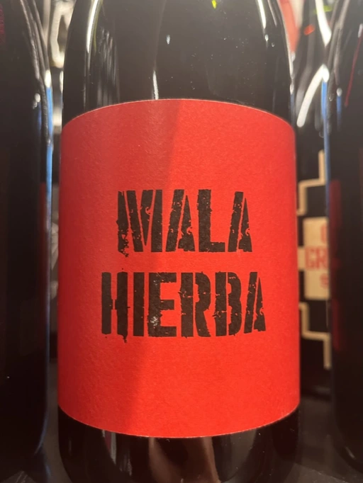
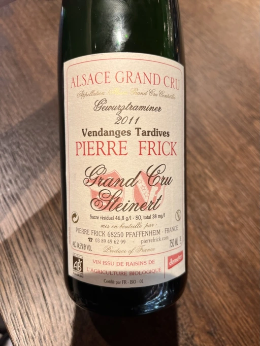
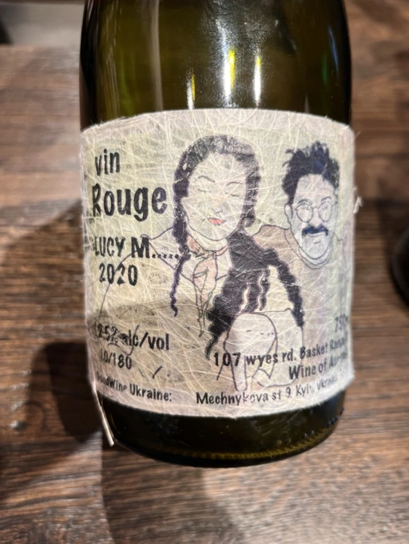
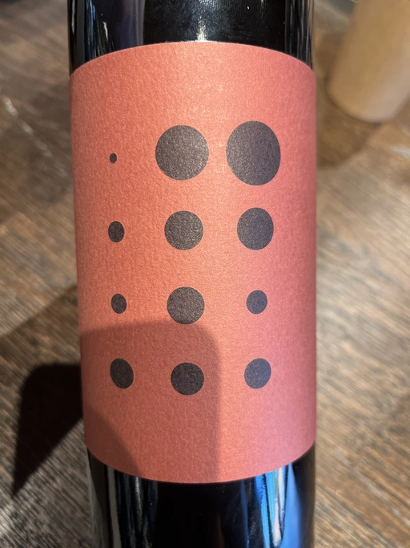
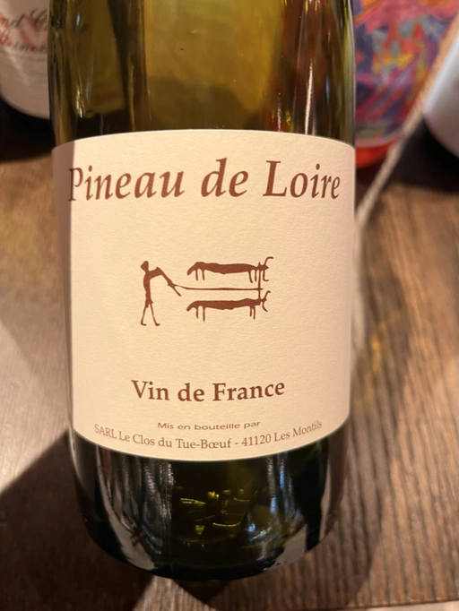
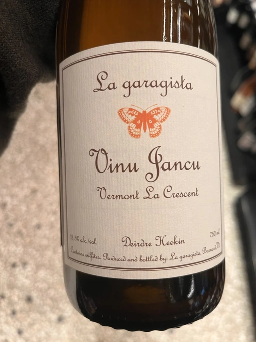
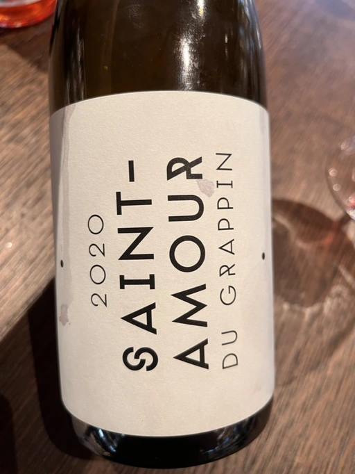

- Type
- White Sparkling, Brut nature
- Producer
- Rita & Rudolf Trossen
- Vintage
- 2018
- Location
- Germany, Deutscher Wein
- Grapes
- Riesling
- Alcohol
- 12
- Sugar
- NA
- Price
- 920 UAH, 1012 UAH, 1150 UAH
- Cellar
- N/A
Ratings
2022-10-18 - 7.50
Well-made and pleasant drink. Typical yet not simple bouquet: ginger, bruised pear, IPA, white flowers and lemon. Fresh, mineral and slightly spicy. Nice. I would gladly drink it again, but it’s so damn overpriced.
Wine #1 on Atypical ver.1.22474487139… event.
Related

Rita & Rudolf Trossen
Schieferstern Purus Riesling trocken - 2018

Rita & Rudolf Trossen
Schieferblume Riesling Trocken Qualitätswein - 2019

Pol Opuesto
Mala Hierba Nunca Muere - 2017

Pierre Frick
Gewurztraminer Grand Cru Steinert Vendanges Tardives - 2011

Tsikhelishvili Wines
Jgia - 2018

Lucy Margaux
Vin Rouge - 2020

Sclavus
Vino di Sasso - 2017

Piquentum
Refošk Vrh - 2018

Clos du Tue-Boeuf
Pineau de Loire - 2021

La Garagista
Vinu Jancu Reserve - 2017

Le Grappin
Saint-Amour - 2020